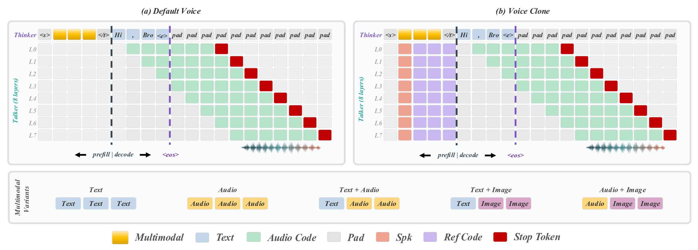

架构精读
MiniMind-O 的核心是 Thinker/Talker 双路径。Thinker 负责理解和文本生成，Talker 在 Thinker 的中间表征上生成 8 路 Mimi audio codes。
总览

<|audio_pad|> 或 <|image_pad|>。OmniConfig 的关键参数
| 参数 | 默认值 | 作用 |
|---|---|---|
| `num_talker_hidden_layers` | 4 | Talker 的 Transformer block 数。 |
| `talker_hidden_size` | 768 | Talker 隐藏维度，dense 版本与 Thinker 对齐。 |
| `audio_vocab_size` | 2112 | 2048 个 Mimi codes 加特殊音频 token。 |
| `audio_pad_token` | 2049 | 音频输入流的 padding。 |
| `audio_stop_token` | 2050 | Talker 停止输出音频的标志。 |
| `audio_spk_token` | 2051 | speaker embedding 注入位置。 |
| `image_token_len` | 64 | 每张图对应的视觉 token 数。 |
| `bridge_layer` | `num_hidden_layers // 2 - 1` | 把 Thinker 中间层表征送给 Talker。 |
源码入口：`model/model_omni.py` 的 `OmniConfig`。
Thinker：理解与文本生成
Thinker 本质上是 MiniMind 语言模型主干。它先把文本 token 变成 embedding；如果 prompt 中含有音频或图像占位符，就用 projector 后的真实模态特征替换对应位置的 embedding。
音频注入
encode_audio_inputs 调用 SenseVoice encoder，inject_audio_features 找到连续 <|audio_pad|> 段并替换。
图像注入
get_image_embeddings / encode_image_inputs 调用 SigLIP2，count_vision_proj 替换 <|image_pad|> 段。
文本 logits
Thinker 最后经过 norm 和 `lm_head`，用于 assistant 文本回复的 next-token prediction。
bridge state
循环 Thinker layers 时，在 `bridge_layer` 处保存中间 hidden states，供 Talker 使用。
Talker：从语义到声音
Talker 不是另一个 TTS 服务，而是一个小 Transformer。它同时看两类信息：Thinker 的 bridge states 和已经生成/给定的 8 路 audio code history。两者分别经 `embed_proj` 和 `codec_proj` 后相加，再进入 Talker blocks。
TalkerEmbedding
8 路 audio codes 使用共享 embedding 主体和轻量 adapter，减少参数重复。
TalkerHead
输出端同样是共享 base + 8 个 adapter，每层 codebook 各自得到 logits。
Speaker Condition
遇到 `audio_spk_token` 时，用 `spk_proj(spk_emb)` 替代该位置 embedding。

一次 forward 的路径
input_ids: (B, 9, T) 或 (B, T)
├─ text_ids = input_ids[:, 8, :]
├─ audio_ids = input_ids[:, :8, :]
├─ Thinker embed text
├─ inject audio / image features at special-token spans
├─ run Thinker layers, save bridge_states
├─ Talker embed audio codes
├─ add speaker embedding at audio_spk_token
├─ combine embed_proj(bridge_states) + codec_proj(talker_emb)
├─ run Talker layers
└─ return text logits + 8 audio logits流式生成
`stream_generate` 每轮先采样文本 token，再根据延迟调度补齐各层 audio code。由于一帧音频需要 8 层 codebook，代码用 `audio_step` 和 `step - 7 + i` 把不同层对齐，只有 8 层都活跃时才向外 yield 一个 audio frame。
文本停止
文本遇到 `eos_token_id` 后进入 finished 状态，但音频还会继续补齐到 stop token。
思考模式
open_thinking=1 时等待 </think>\n\n 后再启动音频输出，避免把思考过程读出来。